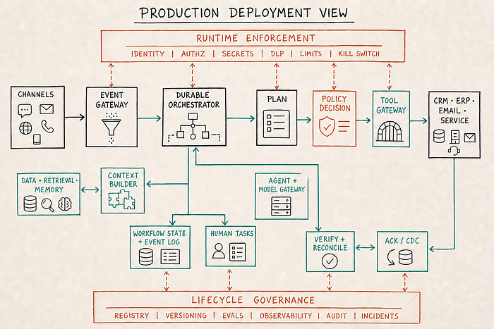
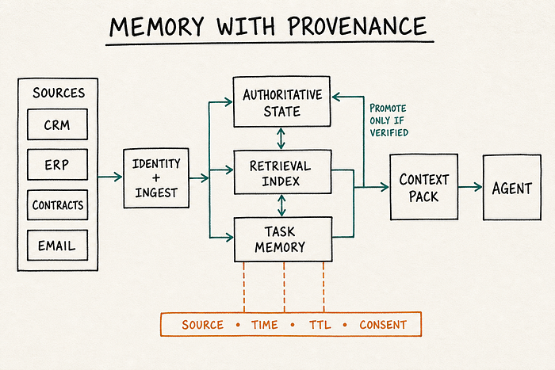
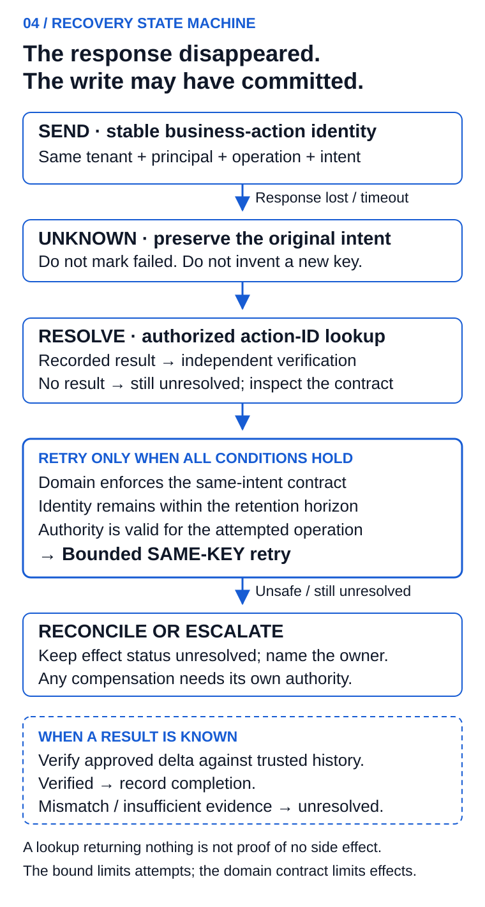
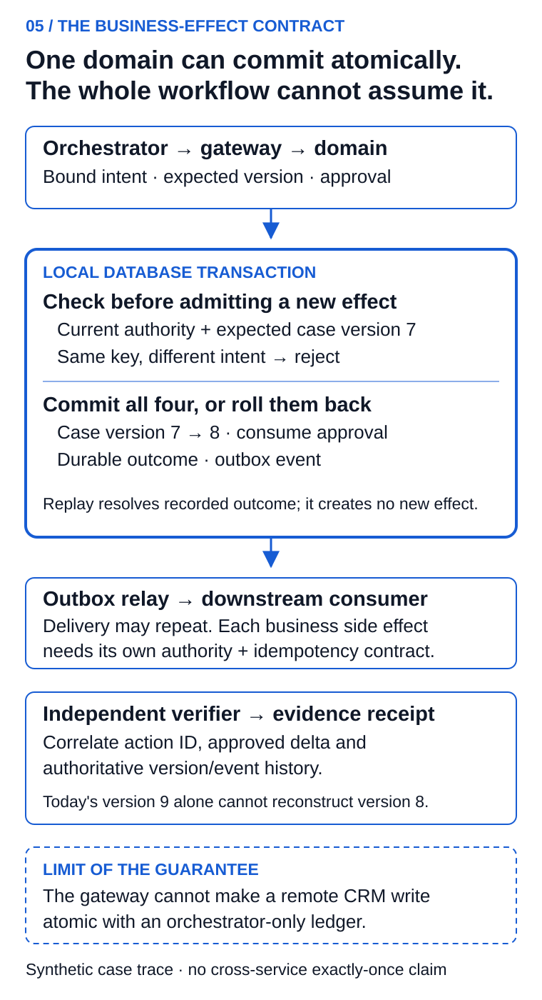
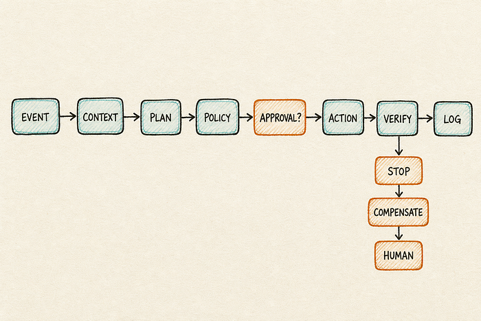
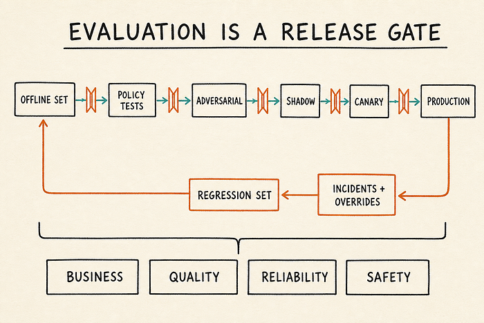
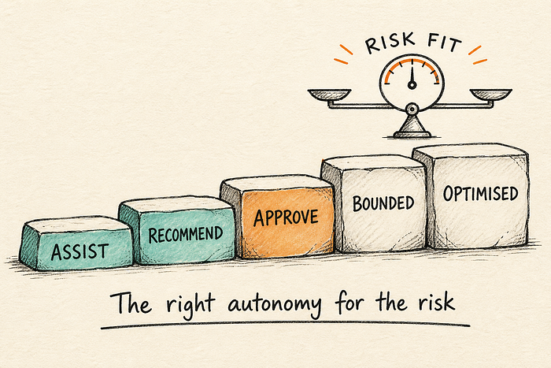
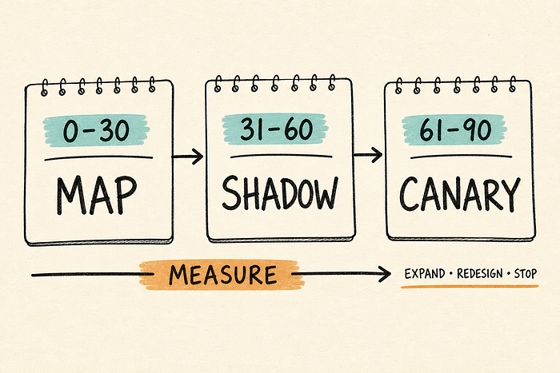

How to Build an Agentic CRM: A Reference Architecture
A practical blueprint for turning customer data into governed, measurable and safely executable workflows
In this illustrative scenario, a strategic customer submits a critical support case at 4:47 p.m. The issue affects production. The contract includes a two-hour response commitment. Product telemetry shows a wider incident, the renewal is 60 days away, and the account has an unresolved billing dispute.
In most companies, the CRM records only part of that story. A support manager becomes the integration layer: checking the contract, messaging engineering, asking the account team about renewal risk, finding someone who can approve an escalation, drafting a customer update and then trying to keep the record current.
An agentic CRM should handle that coordination differently. It should assemble the evidence, propose a plan, enforce policy, request judgment where the risk is high, execute permitted actions and verify that each system actually changed. The human should own the consequential decision — not spend the first hour collecting context.
That is the architectural shift. In my previous article, I argued that the system-of-record role is no longer enough for modern customer operations. This article answers the harder question: what has to exist underneath an agent that is trusted to act?
Before granting CRM write access, require a typed command contract, an explicit unknown-outcome path and a demonstrated failure test. This blueprint supplies all three for one internal routing action. The runnable companion is a local teaching model, not a production-readiness certificate.

The market is moving faster than enterprise readiness
Agentic CRM is no longer a speculative product category. Salesforce describes its Atlas Reasoning Engine as the component that classifies requests into topics with defined scope, rules and permitted actions. Microsoft announced autonomous-agent capability in Copilot Studio and ten Dynamics 365 agents across sales, service, finance and supply chain in 2024, calling agents “the new apps for an AI-powered world.”
Adoption forecasts are not evidence that a particular workflow is safe. In its June 25, 2025 forecast, Gartner projected that more than 40% of agentic-AI projects would be cancelled by the end of 2027 and that 33% of enterprise software applications would include agentic AI by 2028. These were forecasts, not observed completion rates.
The linked McKinsey survey, updated August 25, 2026, reports regular AI use in at least one business function among nearly nine in ten respondents, while 37% report some enterprise-level EBIT impact. These are respondent reports, not causal evidence for this architecture. They reinforce the need to measure the workflow's own baseline, costs and outcomes.
This is why “add a chatbot to CRM” is the wrong brief. A chatbot can answer a question. An agent can change a record, send a message, route a case or initiate a financial workflow. The moment software is allowed to act, permissions, failure recovery and accountability become part of the product.
A reference architecture built around five planes and one control layer
I find it more useful to think in planes than in a linear stack. The five-plane model remains a good operating view, but a production deployment needs two clarifications: events are not the same thing as stored data, and governance is not one service through which work passes once.
The operating architecture has five planes:
- Data and event fabric: authoritative state plus authenticated, versioned business events.
- Context assembly and memory: the controlled construction of evidence for one task.
- Planning and reasoning: specialised agents that interpret objectives and produce typed plans.
- Durable orchestration: the stateful runtime coordinating services, policies, tools and people.
- Capability execution: narrow interfaces that change CRM, email, service, billing, ERP and other systems.
Two cross-cutting rails surround all five. Runtime enforcement covers identity, authorisation, secrets, isolation, data protection, action limits and budgets. Lifecycle governance covers registries, versioning, evaluation, observability, audit, release management and incident response.
At deployment level, seven services make the boundaries real: an Event Gateway, Context Builder, Agent and Model Gateway, Durable Orchestrator, Policy Decision Point, Human Task Service and Tool Gateway. The model may propose a plan; only policy and the execution boundary may permit an action. Some work belongs in deterministic code, some in a workflow engine, some in a model, and some with a person.
Anthropic’s engineering guidance draws the useful distinction. Workflows follow predefined code paths; agents dynamically choose their steps and tools. Its broader recommendation is even more important: use the simplest design that meets the need, because additional agentic flexibility brings cost and latency.

Plane 1: Data and event fabric — the state and signals the enterprise trusts
In a dashboard, poor data creates a misleading chart. In an execution system, poor data can create the wrong action. An outdated SLA can trigger an unnecessary escalation. A duplicate account can split customer history. A stale entitlement can produce a promise the company is not allowed to make.
The entry point should be an Event Gateway rather than a direct model integration. It authenticates the producer, validates a versioned schema, assigns a correlation key, removes duplicates, preserves ordering where the workflow requires it and places malformed events in quarantine. Durable storage and replay let the system recover without asking a model to reconstruct history.
Behind it, identity resolution and a source-of-truth registry establish which system owns each field. Contract terms may come from a contract repository, billing status from ERP, product behaviour from telemetry and account ownership from CRM. Important fields need source, schema version, valid time, update cadence, acceptable staleness and owner. When that contract cannot be met, the workflow should lower confidence or stop — not quietly guess.
Plane 2: Context assembly and memory — evidence, not folklore
A customer is not an account ID. The useful context includes commitments, escalations, product adoption, commercial negotiations, open cases, executive relationships and the reasons behind earlier decisions. That history is often scattered across email, support, meeting notes, call transcripts and internal chat.
A Context Builder — not the agent itself — should construct the evidence pack. It applies user and workload identity to retrieval, enforces row- and field-level permissions, classifies and redacts sensitive data, ranks evidence, checks freshness and fits the result to a declared context budget. Retrieval, semantic search, knowledge graphs and vector stores can help, but they do not automatically create trustworthy memory. The architecture should still distinguish four things:
- authoritative state from model-generated summaries;
- short-lived task memory from persistent customer memory;
- direct evidence from inference;
- current information from material that has expired.
Every derived memory should carry provenance: source, timestamp, relevant permissions, confidence and a retention or expiry rule. A model’s summary of a call should not silently become a contractual commitment. A deleted or corrected source should be removable from future retrieval. Consent, data residency and retention policies have to follow the memory, not merely the database in which it lands.

Plane 3: Planning and reasoning — specialised agents with clear contracts
The reasoning plane turns an objective and an evidence pack into a typed plan. The plan is a first-class artifact: objective, proposed steps, evidence references, confidence, risk tier, expected side effects, required approvals and stopping conditions. It is a proposal, never permission to act.
Specialised agents sit behind an Agent and Model Gateway. The gateway owns model and prompt registries, routing, caching, fallbacks, version pinning, latency ceilings and cost budgets. Agents do not hold credentials or chat freely with one another; the orchestrator invokes them through typed contracts and records every version used.
A service agent may classify severity, an account agent may interpret renewal signals and a compliance service may evaluate relevant policy. Each contract defines allowed inputs, output schema, tools it may request, confidence thresholds and escalation conditions. That contract matters more than an agent’s personality or name: it makes the component testable and replaceable and prevents agent sprawl from becoming the next SaaS sprawl.
A small, fast model may be sufficient for classification; a more capable model may be justified for an ambiguous case plan. Routing by task lets the enterprise manage quality, latency and cost instead of sending every decision to the most expensive model.
Plane 4: Durable orchestration — the runtime, not a magical “brain”
The orchestrator — not a model — owns the workflow. A durable state store, append-only event log, scheduler, dead-letter queue and human-task queue let work survive restarts, hours-long approvals and dependency outages. Agents remain stateless or re-entrant; the runtime decides what happens after success, timeout, contradiction or failure.
Production orchestration needs unglamorous safeguards:
- typed inputs and outputs for tools and agents;
- domain-enforced idempotency contracts and stable action identifiers for supported retries;
- timeouts, bounded retries, stopping conditions and dead-letter handling;
- versioning for prompts, models, policies, tools and workflows;
- cost and latency budgets for each customer journey;
- a deterministic fallback when a model or connected system is unavailable.
“Rollback” needs a defined boundary. A database transaction can roll back before commit; a later compensating action may reduce harm but cannot erase history. A customer email cannot be unsent. A correction, freeze or reassignment is a new action with its own authority and current preconditions, and it may fail. Route unsafe compensation into incident management with an accountable owner.

Plane 5: Capability execution — where AI meets consequences
The only path to CRM, email, service management, billing, ERP or a customer portal should be a Tool Gateway. The reasoning environment receives no general credentials. A Policy Decision Point evaluates the plan, identity, risk, data classifications and current state; enforcement points at retrieval, approval and execution apply that decision.
Each tool is a narrow, typed capability rather than broad access. “Create an internal escalation task with these fields” is safer than “write to CRM.” Every command carries the actor, trace ID, policy version, idempotency key, expiry, risk tier and expected postcondition. The gateway validates parameters, allowlists destinations, applies rate and value limits and records an immutable receipt.
Execution is incomplete until an authoritative acknowledgement with sufficient outcome detail, a versioned read or a correlated change event establishes the expected postcondition. A transport acknowledgement alone does not. A transactional outbox can atomically record a local mutation and its outgoing event; it does not make all downstream effects exactly once. A timeout leaves the outcome unknown: resolve the original action identity and retry only under a supported domain idempotency contract. Otherwise reconcile or escalate. A model saying “done” is never proof.

The control plane: governance that follows every action
The control plane is the architecture’s spine, but it contains two different responsibilities. Runtime enforcement answers, for every request: who or what is acting, which data it may retrieve, which tool it may invoke, what limits apply and whether a person must approve. Lifecycle governance controls registries and owners; prompt, model, policy and workflow versions; evaluations and release gates; observability, audit, incident review and periodic reauthorisation.
NIST AI RMF 1.0 organises AI risk work around Govern, Map, Measure and Manage, with governance explicitly cross-cutting. ISO/IEC 42001 provides requirements for establishing and continually improving an AI management system. Neither document is a plug-and-play CRM design, but both reinforce an essential point: risk management is a lifecycle, not a review meeting before launch.
My design test is simple:
Every agent action should be attributable, bounded, observable and reversible — or containable when it cannot be reversed.
Attributable means the trace identifies the agent, model, prompt, policy version, data sources, business owner and user or service on whose behalf it acted.
Bounded means least-privilege access, approved tools, allowlisted destinations, action limits and explicit separation of duties. Credentials should be short-lived where possible; an agent that reads a case does not automatically need the ability to edit billing.
Observable means teams can see the plan, tool calls, outcomes, cost, latency, confidence and exceptions. Observability is useful only when someone owns the alert and knows what to do next.
Reversible or containable means the workflow can undo a safe change, compensate for an irreversible one, stop further actions and hand control to an accountable person.
Security must assume that customer content is untrusted
Tickets, email, attachments, webpages and knowledge documents can contain malicious or simply misleading instructions. An indirect prompt injection hidden in a customer message can try to make an agent reveal information or misuse a connected tool. OWASP calls out excessive agency as a distinct risk: broad permissions turn a model error or manipulated output into real damage.
Use explicit trust zones. Untrusted email, documents and webpages cross an ingress boundary for malware scanning, type validation, active-content removal and instruction/evidence separation. Identity-aware retrieval and redaction protect the context zone. The reasoning zone receives evidence but no credentials. Only a schema-valid plan may cross into privileged execution after the Policy Decision Point returns a permit; the Tool Gateway and Policy Enforcement Point then constrain destination, token scope and egress.
![Hand-drawn security architecture divided into untrusted input, context, reasoning, privileged execution and enterprise-system zones. Ingress scanning and sanitisation precede a Context Builder with identity, ACL, redaction and provenance. The Agent and Model Gateway has no credentials and emits a typed plan. PDP risk checks and approval precede a Tool Gateway and PEP with scoped tokens and egress filtering. Direct bypasses to tools or enterprise systems are blocked; ACK and CDC events return through controlled ingress for correlated outcome verification.](../../assets/images/agentic-crm-reference-architecture/figure-06.png)
Human approval belongs in a Human Task Service, not a generic pop-up. A task contains the evidence, proposed action, alternatives, policy result, deadline, delegation path and escalation rule. Financial exposure, customer impact, confidence, reversibility and regulation determine when it appears. Too many approvals create fatigue; too few create silent automation.
The operating model matters as much as the controls. Every production workflow needs a named business owner accountable for the outcome, a technical owner accountable for reliability and a risk owner accountable for the action boundary. Those responsibilities may sit in different teams, but they cannot be left to a generic “AI council.” The people closest to the customer process should decide what good looks like; platform and security teams should make that decision enforceable.
The same clarity is required when an incident occurs. Who can suspend an agent? Who tells affected customers? Who decides whether a model or prompt change is safe to release? Who reviews override patterns? A control plane without an operating cadence becomes a collection of dashboards. Establish release reviews, incident reviews and periodic reauthorisation of tools and data access before the first agent goes live.

The support escalation, end to end
Return to the case that arrived at 4:47 p.m. Here is what a governed execution path looks like.
First, the case event enters through an authenticated service channel. The Event Gateway validates its schema, assigns a correlation key and removes duplicates before the durable orchestrator starts a workflow. The Context Builder resolves the account, checks the SLA from the authoritative contract source and assembles current incident, entitlement and communication evidence with permissions, sources and timestamps attached.
The Agent and Model Gateway routes classification to the service agent and relationship analysis to the account agent. The orchestrator combines their typed outputs into a plan artifact: route the case, alert the owner, draft a status update and schedule the next check, with risk, evidence and expected postconditions recorded.
Before anything changes, the control plane evaluates the plan. Can this agent view the contract? Is it permitted to route a priority-one case? Does customer communication require approval? Are the sources fresh enough? Is the confidence above the threshold?
Suppose internal routing is low risk but external messaging is not. The Policy Decision Point permits the first command and sends the second to the Human Task Service. The Tool Gateway creates the escalation task with a command envelope and idempotency key, while the reviewer receives the SLA, incident state, commitments, proposed wording, alternatives and expiry together.
A correlated authoritative observation returns through the Event Gateway and is checked against the approved postcondition. If the CRM response is lost, the runtime retains the original action ID and resolves its outcome; only a supported same-key retry is eligible. If one domain commits while another remains unavailable, the workflow records a partial or unresolved result, reconciles safely and alerts the owner. New telemetry that contradicts the customer promise stops that message for reassessment. Every plan, permit, command, outcome and verification remains linked in the trace.
The human is still accountable. What changes is where that judgment is spent: on the customer promise and the exception, not on copying data among six systems.
Define the retry contract before enabling retries
For the internal case-routing command, define the operation as one business intent against one expected case version. Repeated delivery of that intent should resolve to one recorded effect. A later routing decision is a new intent and needs new evidence and authority.
Use a stable action identifier scoped to the tenant, represented principal and operation. Bind it to the target, exact requested delta, actor, expected record version and applicable policy version. A changed payload using the same identifier is a conflict, not an update to the old request. Identical parameters alone do not establish identical intent. AWS Builders' Library: safe retries.
The target domain must specify:
| Contract item | Required behavior for this proposed design |
|---|---|
| New action | Authenticate and authorize; validate current preconditions before admitting the effect |
| Same action and same payload | Return the recorded result without another mutation; authorize result access |
| Same key and different payload | Reject as an intent conflict |
| Changed record version | Stop and reassess; do not overwrite concurrent legitimate work |
| Unknown outcome | Resolve by action ID or use a supported same-key idempotent retry; do not invent a new key |
| Deduplication retention | Cover the supported retry/replay horizon; reject or reconcile expired identities instead of treating them as new |
| No domain idempotency contract | Quarantine the ambiguous action for reconciliation or an accountable operator |
An action ledger written only in the orchestrator cannot make a remote CRM mutation atomic with that ledger. The effect-owning domain must implement the required contract or expose an equivalent transactional interface. A gateway's successful request validation is not proof that the remote system changed exactly once.
For a domain under your control, the transaction can conditionally mutate the record, consume the bound approval, record the outcome and create an outbox event together. The relay can still deliver that event more than once. Every downstream side effect requires its own contract.
The 4:47 p.m. case when the response disappears
The following identifiers and interleaving are synthetic extensions of the opening scenario:
| Step | Observed event | Required result |
|---|---|---|
| 1 | Case 471, version 7, arrives twice |
The workflow identifies duplicate input; domain enforcement still protects against replay |
| 2 | Worker A presents action case-471-route-v7 |
Current authority and expected version are checked at the effect boundary |
| 3 | Domain commits routing to enterprise support | Version becomes 8; approval consumption, outcome and outbox event commit together |
| 4 | Response is lost after commit | Caller records outcome unknown; it does not declare failure or create another intent |
| 5 | Worker B presents the same action and payload | Recorded version-8 result is resolved, without another routing effect |
| 6 | A new command expects version 7 |
It is rejected for reassessment; a new key does not bypass a stale precondition |
| 7 | Independent observer checks the effect | Verify the approved delta using an authoritative versioned observation; mismatch remains unresolved |
If another actor has already moved the record to version 9, a current read alone does not reconstruct the version-8 effect. Use a trusted version/event history correlated to the action, or retain the outcome as unverified. Do not blindly overwrite version 9 to recreate the expected screenshot.
The separately approved customer message remains a different action. The routing approval does not authorize sending it. If incident telemetry changes the proposed promise, stop that message for reassessment even if internal routing is already complete.
A runnable local acceptance model
The companion bundle includes protocol.py, which deliberately models only one SQLite-owned domain and one operation: internal case routing. That operation's namespace is implicit in this single-purpose service. It has no network access, CRM credentials, model calls, signature validation or distributed policy cache. Its grants are trusted synthetic fixtures, not objects accepted from an untrusted client.
from protocol import Command, Domain, UnknownOutcome
command = Command("IN", "ops-owner", "routing-agent", "case-471-route-v7",
"case-471", 7, "enterprise-support", 12)
domain = Domain("new-teaching-demo.sqlite", clock=lambda: 100)
domain.initialize(command, expires=200) # NEW temporary teaching database only
try:
domain.execute(command, "approval-1", lose_response=True)
except UnknownOutcome:
assert domain.lookup(command)["version"] == 8
assert domain.inspect()["effects"] == 1
assert domain.inspect()["outbox"] == 1
Use the supplied test suite, which creates isolated temporary databases: python3 -m unittest -v test_protocol. It exercises actual concurrent connections for two workers sharing one action, both orderings of action versus revocation, lost response followed by connection restart, different payload with the same key, stale record rejection and invalid authority. An injected outbox failure must roll back the record, approval consumption and outcome. The no-contract branch is a tested policy decision, not a simulated remote CRM integration.
This model's execution route requires current valid authority even when replaying a result. After authority expires or is revoked, use a separately authorized read-only outcome-resolution route; do not reissue mutation permission merely to investigate history. The fixture's lookup method omits authentication and must never be exposed as a public API.
The teaching database uses serialized writes. Passing these tests does not measure production capacity, prove external-service atomicity, implement OAuth or establish a distributed revocation bound. A deployment needs its own authentication, authorization, signature validation, retention, migrations, access-controlled result lookup, failure testing and operational review. The Passport article defines the authority boundary separately.
Report duplicate business effects per 1,000 attempted actions separately from transport success. Track unresolved outcomes by count, severity and age. A successful API response and a high receipt-coverage percentage do not establish that every business effect has been independently verified.
Evaluation is part of the architecture
An agent that produces a polished answer can still take a poor action. Response quality is not enough; evaluation has to follow the workflow from evidence to business outcome.
Before release, build an offline test set from real, de-identified cases. Include normal paths, ambiguous cases, missing data, conflicting sources, policy boundaries and adversarial content. Test permissions and tool schemas as rigorously as model output. Then run the workflow in shadow mode: let it propose what it would do while people continue the real process.
Move to a small canary only after the shadow results meet a declared gate. Start with low-risk actions and retain approval for external or irreversible steps. Any change to a model, prompt, policy, retrieval source or tool should trigger regression evaluation.

Track four kinds of measures:
- Business: SLA breaches, case cycle time, retention, revenue leakage and productivity.
- Task quality: classification accuracy, completeness, evidence quality and resolution quality.
- Reliability: tool success, duplicate-action rate, retries, latency and cost.
- Safety: policy violations, blocked actions, human overrides, incidents and harmful-action rate.
Usage is not a success metric. If the workflow is popular but does not improve the baseline — or improves speed while increasing customer corrections — it is not ready to scale.
Maturity means the right autonomy for the risk
The usual maturity ladder ends with “fully autonomous.” That is the wrong destination. A mature financial or regulated workflow may always reserve final approval for a person. The goal is not maximum autonomy; it is the most useful autonomy the evidence and controls can support.
I use five operating stages:
- Assist: summarise, search and draft; a person performs the action.
- Recommend: propose a next step with evidence and confidence; a person decides.
- Execute with approval: prepare the action and run it only after review.
- Bounded execution: complete low-risk, reversible actions within explicit limits.
- Optimised, governed autonomy: select the right autonomy by risk tier, monitor continuously and route exceptions to people.
Promotion between stages should require evidence: evaluation pass rate, data quality, override rate, incident rate, latency, cost and business impact. Teams should be able to move a workflow backward when risk changes. A maturity model that only moves forward will eventually conceal failure.

Where to start — and where not to
The first workflow should have clear value, reliable data, repeatable decisions, measurable outcomes and manageable consequences. It should also be narrow enough that the team can build a credible test set.
Good early candidates include CRM data-quality recommendations, case classification and internal routing, SLA-risk alerts, lead enrichment and renewal-risk detection. These workflows can create value before the organisation grants broad write access. Even here, the initial mode should usually be recommendation or shadow operation.
Avoid autonomous pricing changes, contract amendments, large refunds, regulated communication, account termination or binding customer commitments as a first deployment. High value does not make a workflow a good pilot. Irreversibility, weak data or difficult-to-measure quality can outweigh the potential return.
A simple prioritisation conversation is often more useful than a long use-case catalogue. Score the candidate on business value, data readiness, decision repeatability, reversibility and customer or regulatory risk. Then choose the workflow with the best evidence-to-consequence ratio — not the one that looks most impressive in a demo.
Why promising programmes still fail
Most failures will not begin with a spectacular model error. They will begin with an ordinary organisational shortcut.
One team will launch without a measurable baseline, making success impossible to prove. Another will connect an agent to stale data and spend months tuning prompts for what is actually a source-quality problem. A third will let every function buy or build its own agent, producing overlapping permissions, conflicting customer messages and no shared incident owner.
The countermeasures are equally practical. Tie the first workflow to a business measure that already exists. Put data freshness and ownership into the architecture, not a cleanup backlog. Maintain an inventory of agents, tools, owners, models and action boundaries. Require a common trace format so a cross-functional workflow can be investigated end to end.
Treating an agent as a chatbot creates another failure mode. A chatbot can be evaluated on whether its response is helpful. An agent must also be evaluated on whether it chose the correct tool, respected policy, changed the intended record exactly once and produced the expected business outcome. The polished explanation is not the work; the verified state change is the work.
Human-in-the-loop design can fail in both directions. If every decision requires approval, the “agent” becomes an expensive drafting interface. If approvals disappear before the evidence supports that change, the organisation creates invisible automation. Review override and approval data regularly. A high override rate may indicate poor instructions, bad retrieval, the wrong threshold or a task that should never have been delegated.
Finally, avoid measuring progress by the number of agents deployed. That metric rewards complexity. A single well-instrumented workflow that reduces SLA breaches is more valuable than twenty agents generating activity. Scale only when the system improves a business outcome without degrading safety, reliability or customer trust.
A practical 90-day path
Agentic CRM should enter the business as a measured operating change, not a software installation.
Days 0–30: map the work
Choose one workflow and establish its baseline. Map the events, systems, decisions, approvals, failure modes and manual handoffs. Identify authoritative data sources. Assign a business owner, technical owner and risk owner. Build the first evaluation set from real cases and decide what would count as a material improvement.
This phase should end with a documented action boundary: what the system may read, what it may propose, what it may change, which actions require approval and which actions are prohibited.
Days 31–60: build in shadow mode
Implement narrow tool contracts, retrieval with provenance, policy checks, tracing and a deterministic fallback. Run the workflow beside the existing process without allowing it to change customer-facing state. Compare its decisions with human outcomes and test prompt injection, missing data, system outages and duplicate events.
Review the disagreements. Some will expose model limitations; others will reveal that the human process was inconsistent. Both are useful. Turn each material failure into a regression test.
Days 61–90: release a bounded canary
Allow a small segment of low-risk actions, keep approval for consequential steps and monitor the four measure groups. Publish an incident runbook and make it easy for users to stop or override the workflow. At the end of the canary, decide whether to expand, redesign or stop.

Only after one workflow is reliable should the enterprise add another agent or broaden autonomy. This discipline feels slower than launching a “constellation of agents,” but it prevents the expensive cycle of pilots that never become dependable operations.
The principle that matters
Agentic CRM is not defined by how many agents appear in the architecture or how little human involvement remains. It is defined by whether the system can turn trusted evidence into a useful action — and whether the enterprise can explain, constrain and recover from that action.
The system-of-record role is not disappearing. It is becoming the foundation for a more demanding role: governed execution across customer operations.
If you were to give one CRM workflow bounded autonomy tomorrow, which workflow would you choose — and what control would you insist on before switching it on?
Also published on Medium: How to Build an Agentic CRM: A Reference Architecture.